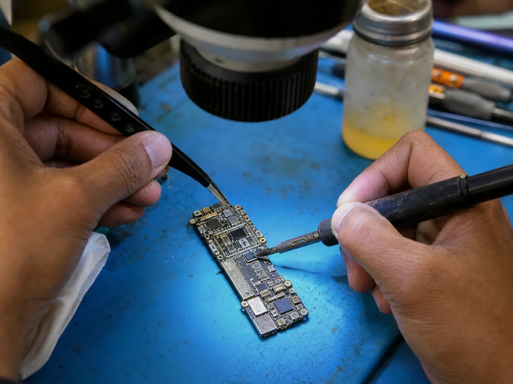
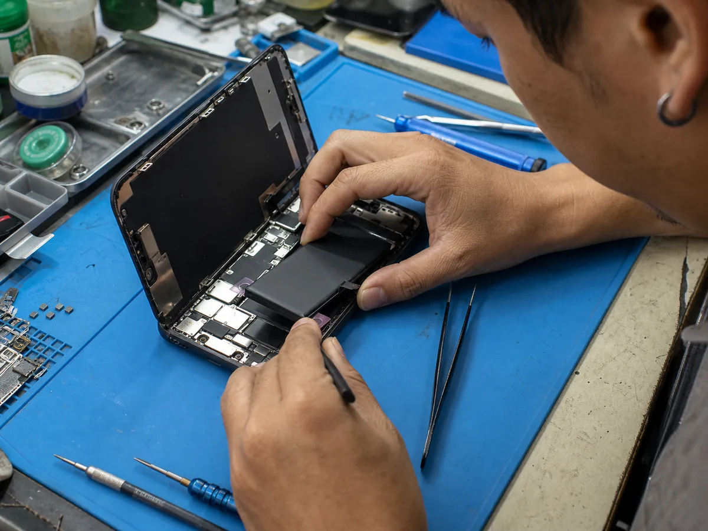

บทความแก้ปัญหา
ก่อนส่งซ่อม
คำตอบสั้นที่อ่านแล้วนำไปใช้ได้ทันที พร้อมรายละเอียดช่วยตัดสินใจอย่างปลอดภัย

บทความแก้ปัญหาล่าสุด
ค้นหาจากอาการเสีย รู้สิ่งที่ควรทำ และหลีกเลี่ยงวิธีที่ทำให้เครื่องเสียเพิ่ม

ไอโฟนจอเขียว จอขาว แก้ยังไง?
เช็กว่ายังซ่อมวงจรจอเดิมได้หรือจำเป็นต้องเปลี่ยนจอชุด

วิธีเช็คแบตเสื่อม iPhone / Android
ดูสุขภาพแบต อาการใช้งานจริง และสัญญาณที่ควรรีบเปลี่ยน

โทรศัพท์ตกน้ำ ทำอย่างไรก่อนส่งซ่อม?
5 ขั้นตอนแรก และสิ่งที่ห้ามทำเพื่อลดความเสียหาย

เครื่องติดรายเดือน ปลอดภัยไหม?
แยกประเภทล็อก ผลต่อข้อมูล และช่องทางแก้ไขที่ถูกต้อง

Battery Health ต่ำกว่า 80% และการย้าย BMS
ข้อดี ข้อจำกัด และสิ่งที่ควรถามก่อนเปลี่ยนแบตเตอรี่

iPad แตก: ลอกกระจกหรือเปลี่ยนจอชุด?
เลือกวิธีซ่อมให้ตรงกับภาพ ทัช และโครงสร้างของแต่ละรุ่น

MacBook จอแตก จอเป็นเส้น
วิธีแยกว่าเสียเฉพาะจอ สายแพ หรือวงจรแสดงผล

แบตเตอรี่ MacBook เสื่อม
สัญญาณเตือน วิธีเช็ก Cycle Count และการเตรียมเครื่อง

MacBook เปิดไม่ติด
ขั้นตอนแยกอะแดปเตอร์ แบตเตอรี่ และเมนบอร์ด

MacBook ชาร์จไม่เข้า
ตรวจสายชาร์จ พอร์ต USB-C และวงจรชาร์จเบื้องต้น

MacBook ค้างโลโก้ Apple
สาเหตุจากระบบ พื้นที่จัดเก็บ และอุปกรณ์ภายใน
รวมอาการเสีย MacBook
ศูนย์รวมลิงก์บริการและอาการที่พบบ่อยในแต่ละรุ่น